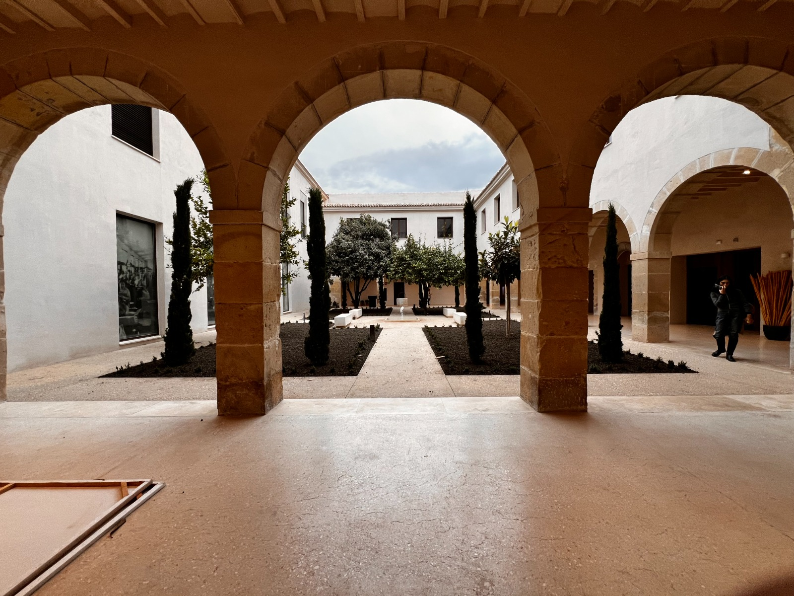

La ubicación se consulta solo al pulsar el botón y no se almacena.

Antigua Casa de Misericordia · fotografía de la nueva documentación aportada
LOCALIZACIÓN DEL CONJUNTO
Tabacalera, en Alicante
El mapa sitúa el centro cultural. Las cinco memorias son estaciones interpretativas dentro del conjunto, no cinco coordenadas interiores verificadas.
Al cargarlo se establece conexión con el proveedor del mapa.
ANTIGUAS SESIONES 4 Y 5
De las fuentes a tu producto
Esta ruta combina fuentes históricas, tres planos de la fase I rehabilitada y fotografías aportadas. Elige qué evidencias utilizarás en cada hito y adapta el producto a tu público; el diseño se guarda únicamente en este dispositivo.
CDT ALICANTE · PABLO ROSSER Y SEILA SOLER
Dos sesiones, un producto
La primera sesión reúne los contenidos históricos. La segunda explica, adapta y ensaya el recurso digital que integra las antiguas sesiones 4, 5 y 6.
SESIÓN 1 · HISTORIA Y FUENTES
Leer las capas del lugar
Agua y epidemias; Casa de Misericordia; arquitectura industrial; cigarreras y cuidados; Guerra Civil y refugios; usos culturales.
Resultado: reconocer qué cuenta cada fuente y separar dato documentado, interpretación y propuesta didáctica.
SESIÓN 2 · PROPUESTA DE 120 MINUTOS
Explicar y probar el producto
0–15 min Presentar público, objetivo y narrativa de la ruta.
15–40 min Demostrar cinco hitos y contrastar planos históricos, plantas de final de obra de 2026 y fotografías.
40–60 min Explicar geolocalización, QR y alternativas accesibles.
60–85 min Adaptar una ficha en «Crear el producto».
85–105 min Prueba cruzada: otro grupo usa el QR y resuelve un reto.
105–120 min Evaluar, corregir y preparar su aplicación en el lugar.
Cómo se reúnen las sesiones 4 a 6
Programa original
Aplicación en esta web
Evidencia
4 · Diseño
Público, narrativa, hitos y retos
Ficha del producto
5 · Producción
HTML móvil, fuentes, QR y cartelas
Ruta y material imprimible
6 · Salida y validación
Prueba cruzada y evaluación
Ficha exportada con modalidad de prueba
Un ensayo en aula comprueba comprensión y manejo. La validación del circuito, tiempos reales, accesos y localización de las cartelas requiere una prueba sobre el terreno; no se declara realizada por disponer de esta web.
MEDIACIÓN EN EL LUGAR
Una puerta a cada memoria
Cada QR abre su hito directamente. Imprime las tarjetas para una salida piloto; la instalación permanente requiere autorización y una dirección web accesible para los visitantes.
Introduce la dirección de publicación para generar QR que puedan abrirse desde otro teléfono.
ANTIGUA SESIÓN 6 · PRUEBA Y MEJORA
¿Funciona en la visita?
Registra una prueba concreta. Comprueba que la relación entre fotografías, planos de 2026 y espacios visitados sea correcta, y que el recorrido entre niveles resulte accesible. Los resultados se guardan en este navegador y pueden descargarse; no se envían a un servidor.
TRAZABILIDAD DOCUMENTAL
Lo que sostiene el relato
Las referencias indican páginas digitales del PDF. Los textos y retos de la ruta son una adaptación didáctica; no representan testimonios literales de trabajadoras.
Criterios de interpretación
La nueva documentación diferencia tres planos de final de obra de marzo de 2026 de las fases históricas y propuestas anteriores. Las fotografías permiten observar materiales, patios y circulaciones; no acreditan por sí solas funciones históricas, horarios o apertura al público. La galería fotografiada se interpreta sin asignarla automáticamente a uno de los refugios.
Los 52 individuos son un número mínimo antropológico, no un censo de todas las víctimas. La relación entre restos y episodios epidémicos se explica mediante contexto y evidencias; no se asigna automáticamente cada resto a una epidemia concreta.
El refugio exterior de calle Sevilla y los espacios interiores de protección se distinguen. Los 325 ocupantes corresponden a la capacidad documentada del refugio exterior.
«Secadero» es una denominación que requiere contexto: el dossier distingue desvenado, preparación de rama y quemaderos. El material menciona 1893 y 1897–1898; se sigue la síntesis matizada del dossier.